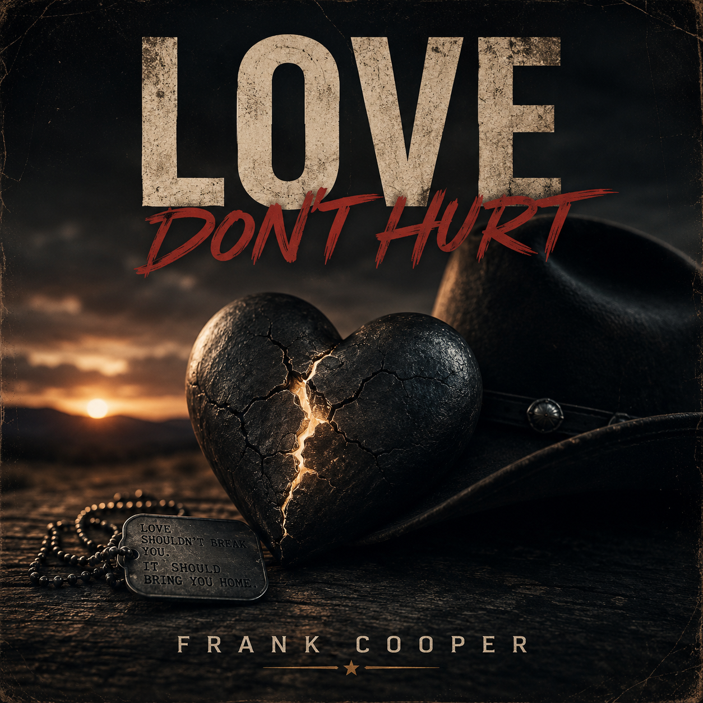
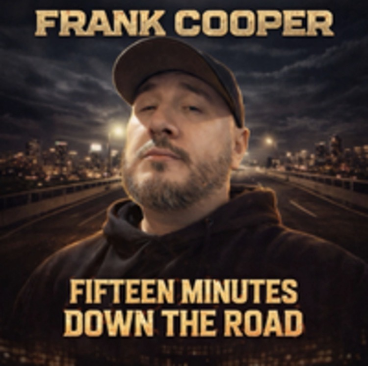

Frank Cooper crafts songs rooted in heart, distance, and the roads that lead us home. Blending honest storytelling with cinematic undertones, his music captures the miles between love, loss, and everything in between.
FrankCooperMusic@gmail.com